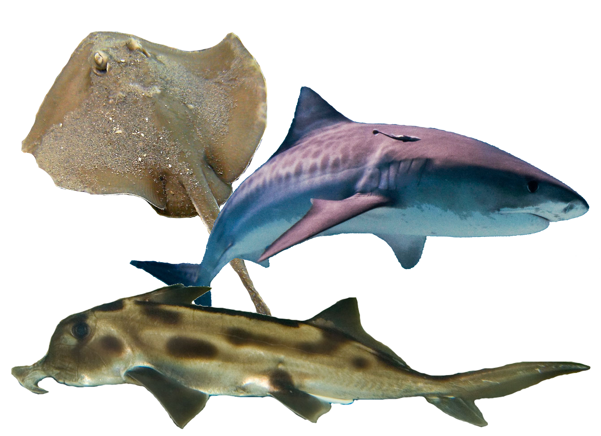
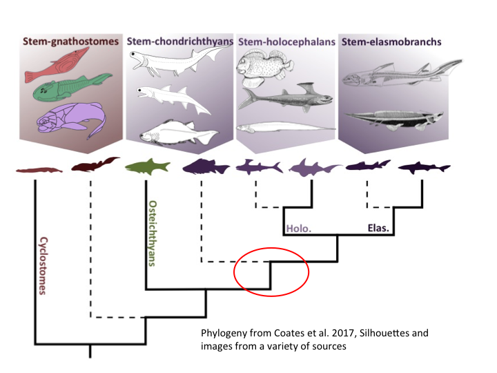
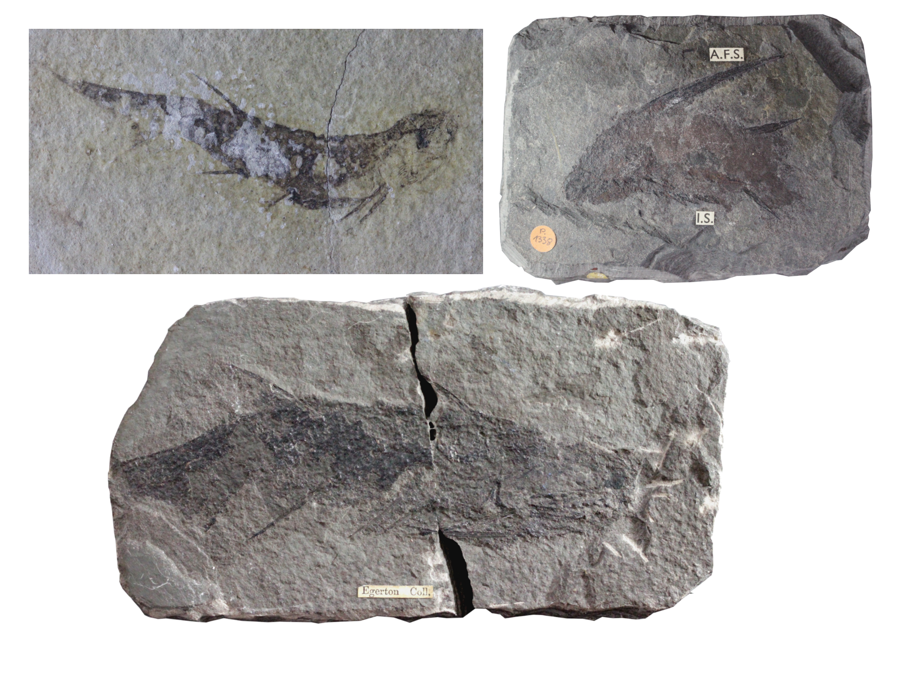
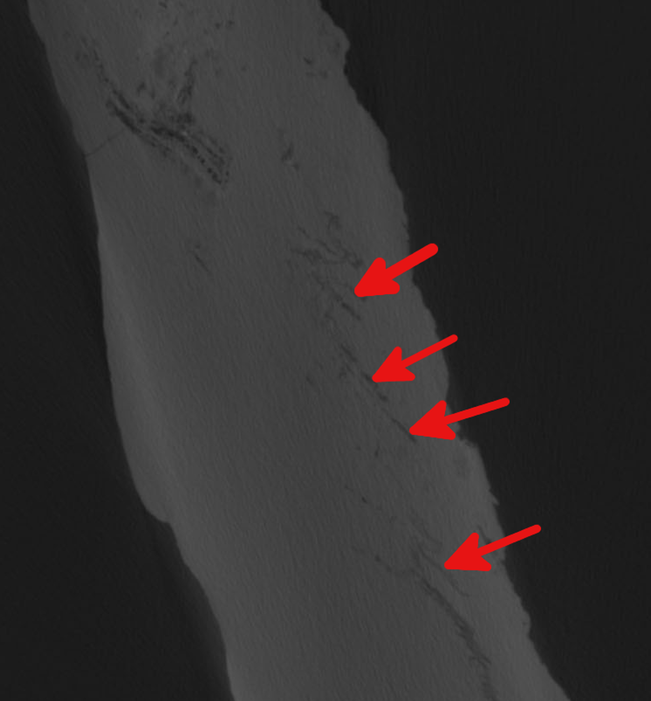

Research
The early evolution of cartilaginous fishes
Jawed vertebrates
Jawed vertebrates, or gnathostomes, have used evolutionary innovations such as bony tissues, paired fins/limbs, and jaws to reach an immense diversity of form. A crucial stage in the evolution of these structures surrounds the divergence of the two living groups of gnathostome-the cartilaginous and the bony fishes- in the waters of the Palaeozoic (541-254 million years ago). To reconstruct how these two modern groups evolved we need to understand the anatomy and relationships of their earliest relatives from this period.

Early cartilaginous fishes
In particular My PhD work focuses on the early, now fossilised, relatives of the cartilaginous fishes - the group comprising living sharks, rays, and elephant sharks. Because their internal skeletons are made of cartilage, rather than bone, and their bodies are covered in tiny scales, rather than large plates, cartilaginous fishes tend to fossilise more poorly than their bony cousins. Several well-preserved early shark-like fossils are known which provide valuable insights into their anatomy, for example the early "sharks" Doliodus and Pucapampella. These fossils are however few and far between, and when they are found are often missing crucial morphological data.

Acanthodians
Instead, I work on acanthodians, a historically problematic collection of Palaeozoic fossil fishes, with tiny, shark-like scales and an abundant array of fin spines. A combination of bony-fish-like and cartilaginous-fish-like features in acanthodians has in the past confused those trying to classify them. Recently evidence has increasingly built that acanthodians aren't a group at all, and are instead several groups of early cartilaginous fish. This means that their morphology and relationships holds vital evidence for reconstructing the stepwise evolution of the body plan of modern cartilaginous fishes.

Methods
In the past palaeontologists have struggled to access much of the information in fossils without either destroying the specimen, or losing the spatial relationships between its component parts. This is very much the case with acanthodians (and early vertebrates more generally!) which are often very small, poorly preserved, flattened, and which have skeletal elements that are difficult to distinguish from the surrounding matrix by eye. The recent explosion in the use of computed tomographic (CT) techniques in palaeontology provides a solution to these problems and has greatly benefited early vertebrate research. I am using these techniques with acanthodian fossils to visualise previously unknowable parts of their internal anatomy. I then use this anatomy can then be used to build and improve datasets that seek to work out the relationships of acanthodians and early cartilaginous fishes on the basis of their anatomy.

TL:DR?
My research written in Up-Goer 5
Humans, other land animals with four legs, and lots of things that live in the water come from animals that lived in the water a long, long time ago. The bodies of these animals can be found in rocks. I use computers to look inside these rocks to understand what these animals looked like. From this we can understand the changes that led to them turning into living animals over time. The old animals I look at are usually like the living group that has big teeth, lives in the water, and which was in the movie ''Jaws''.